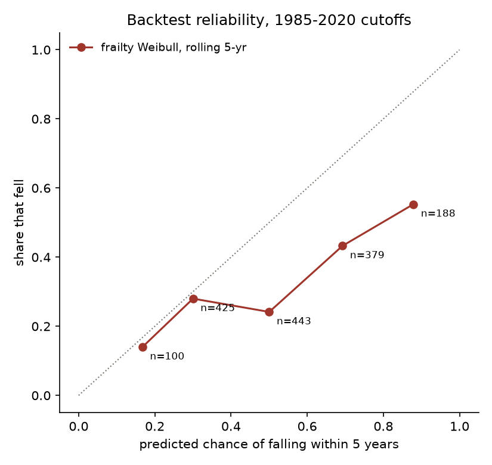
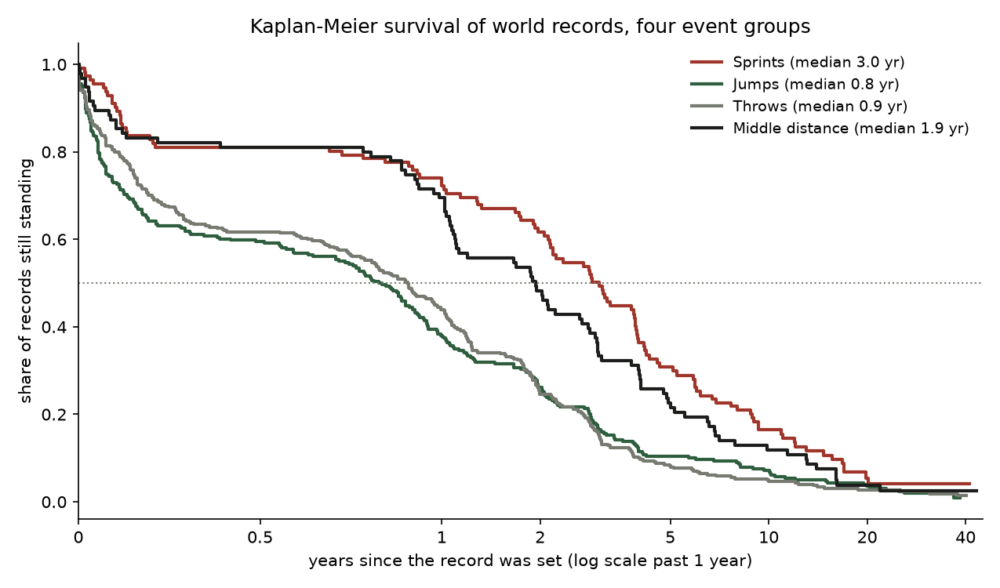

| 1 | Pole vaultDuplantis, men | 6.31 | 2026 | 48% |
| 2 | 5000 mChebet, women | 13:58.06 | 2025 | 35% |
| 3 | 10,000 mChebet, women | 28:54.14 | 2024 | 29% |
| 4 | MarathonSawe, men | 1:59:30 | 2026 | 29% |
| 5 | High jumpMahuchikh, women | 2.10 | 2024 | 28% |
| 6 | Pole vaultIsinbayeva, women | 5.06 | 2009 | 28% |
| 7 | DiscusAlekna, men | 75.56 | 2025 | 27% |
| 8 | 1500 mKipyegon, women | 3:48.68 | 2025 | 25% |
| 9 | MarathonChepngetich, women | 2:09:56 | 2024 | 24% |
| 10 | 400 m hurdlesMcLaughlin-Levrone, women | 50.37 | 2024 | 24% |
From tables/watchlist.csv (run of 28 October 2026). All 46 records, with intervals and a five-year
horizon, are in the sortable watchlist. The backtest says to trust the order more than the levels.
The backtest
I cut the data at the end of 2010, fitted the model on what was known then, and asked for each of the 46 records standing that day: what is the chance this falls by 2025? 26 of them fell. The model's Brier score was 0.235 against 0.329 for the historical base rate and 0.250 for the Kaplan-Meier method the July version used. A rolling version, refitting every year from 1985 to 2020, shows the weak spot: records the model gave about a coin flip fell only about a quarter of the time.

What makes a record last
- The period it is at risk in. Since 2000, records fall at about half the rate of 1980 to 1999 (hazard ratio 0.53).
- Margin. Each percentage point by which a record beat the one before it cuts the hazard by about a fifth (0.79).
- A busy event. Events that have just seen records keep seeing them (1.28 per unit of log count of records in the last three years).
- Event group. Throws and jumps records fall about twice as fast as sprint records. Half are gone inside a year.

Rebuilt from World Athletics' lists
The July 2026 version scraped Wikipedia and kept 9 of 21 events. It missed rows in the women's 800 m and still listed Kiptum's 2:00:35 as the marathon record, three months after Sawe ran 1:59:30. This version reads World Athletics' statistics handbook and progression pages, keeps hand and automatic timing apart, and fails its own run if any current record differs from World Athletics' records page. The rules are in docs/data_decisions.md.